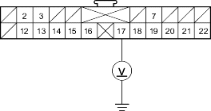

- Connect a voltmeter between the No. 17 terminal (+) of C2 connector and body ground. Turn the ignition switch ON (II) and measure voltage. There should be battery voltage.
C2 CONNECTOR

Wire side of female terminals
Is there battery voltage?
YES - Faulty SRS indicator light circuit in the gauge assembly or poor contact at C2 connector and the gauge assembly; if the connection is OK, replace the gauge assembly. 
NO - Open in the under-dash fuse/relay box No. 19 (7.5A) fuse line, or open in the YEL wire of dashboard wire harness A. If the under-dash fuse/relay box is OK, replace the faulty harness.
- Replace the No. 19 (7.5A) fuse, and check to see if the SRS indicator light comes on.
Does the SRS indicator light come on?
YES - The system is OK at this time.
NO - Short to ground in the under-dash fuse/relay box No. 19 (7.5A) fuse line.